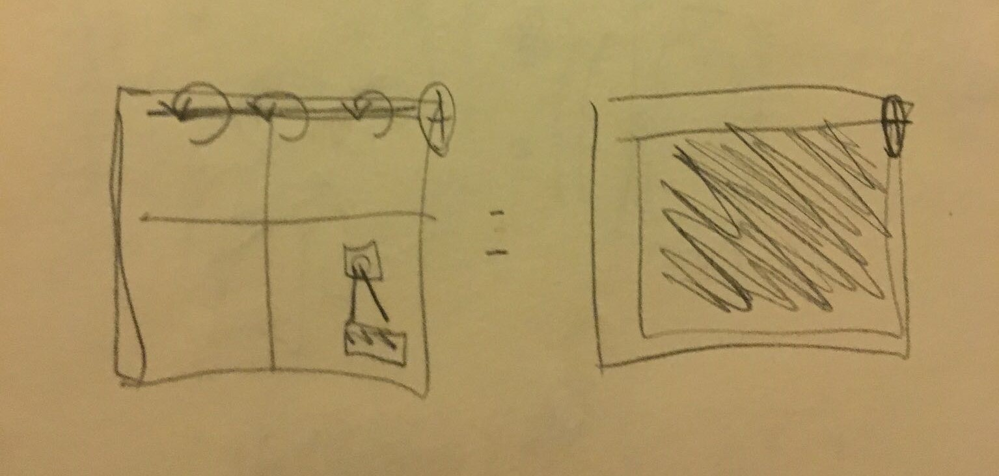

When introduced to this project, my intial thoughts circled common everyday problems I face at home with a pet cat. This is reflected in my
initial sketches as many of them are related to cats. I also tried to focus more on the aesthetics of the product itself - I wanted
to ensure my ideas were all things which could be easily hidden or made to fit in with its surroundings.
Some of the design feedback we received includes the following:
Curtain idea is good and useful, could be extended to open the window at a certain temperature too to let in fresh air
Litterbox idea is realistic as cats can be tricky, also good because it gives the cat privacy while doing their business but still notifies you when its time to clean
Automated dog playing project would be perfect for high energy dogs
Barking training project should have a dog treat threshold to result in better behaviour overtime
Robot backpack - can it just somehow wake you up if you fall asleep?
Refined Sketches:
We decided to go with the curtain idea, where the curtain would automatically close based on the temperature and light to avoid
having a room heat up due to the sun shining directly into it. Most of our variations focused on different
ways to make the curtain fall. This was the most difficult part of our project as the servo
motor can only spin so much. Below are our refined sketches:
Sabrina's sketch
Sabrina's sketch
Sabrina's sketch
Andrea's sketch
Andrea's sketch
Grace's sketch

Grace's sketch
Rhys's sketch
Rhys's sketch
Rhys's sketch
When actually implementing our design, we decided to build a sort of tech diarama to imitate a bedroom. We used a piece of fabric as
our curtain and had a chopstick as the curtain rod. We chose to use a servo motor to rotate, which would let the curtain fall, and we also have a temperature
sensor on the outside of the window in our diarama. Once the temperature sensor senses a
certain temperature, the motor will run, releasing the curtain and letting it fall.
We also had planned to use a light sensor as well, as an extra measure, however it was not sensitive enough with the
abilities we had to change the lighting in a room (cupping the sensor in our hands for dark and shining a light on it for light). It also would have been redundant for the purposes of this project. Thus,
we focused on using only the temperature sensor.
Due to limitations with hardware, we were not able to support rolling the curtain back up once the temperature drops to reset the system.